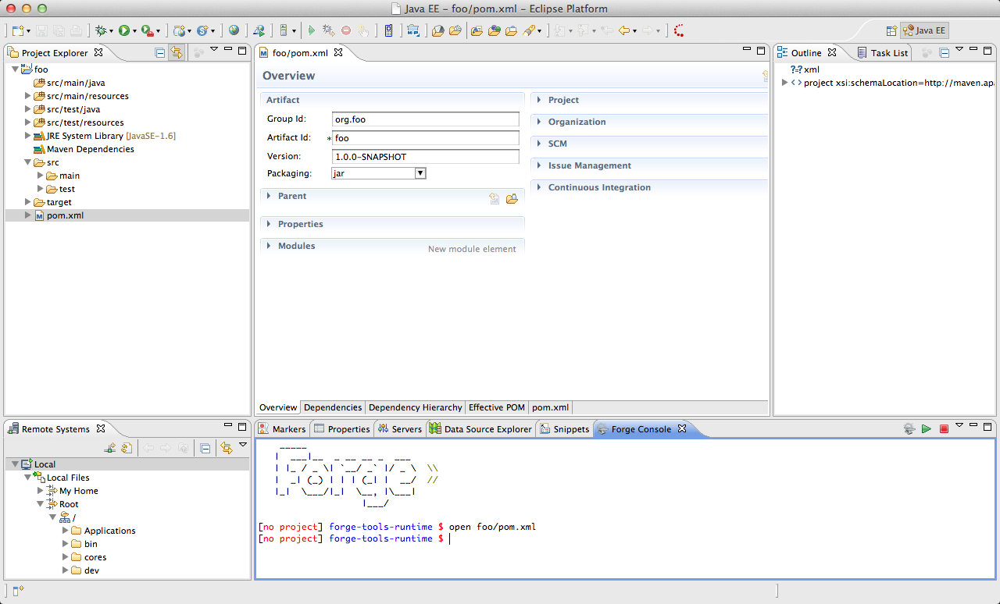
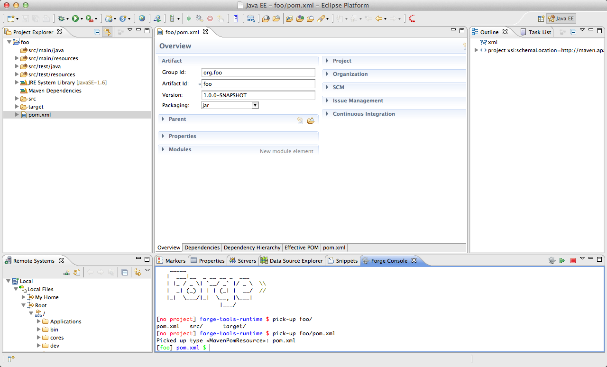
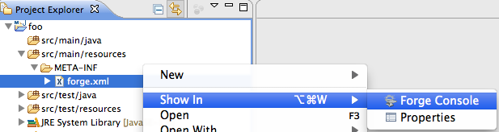
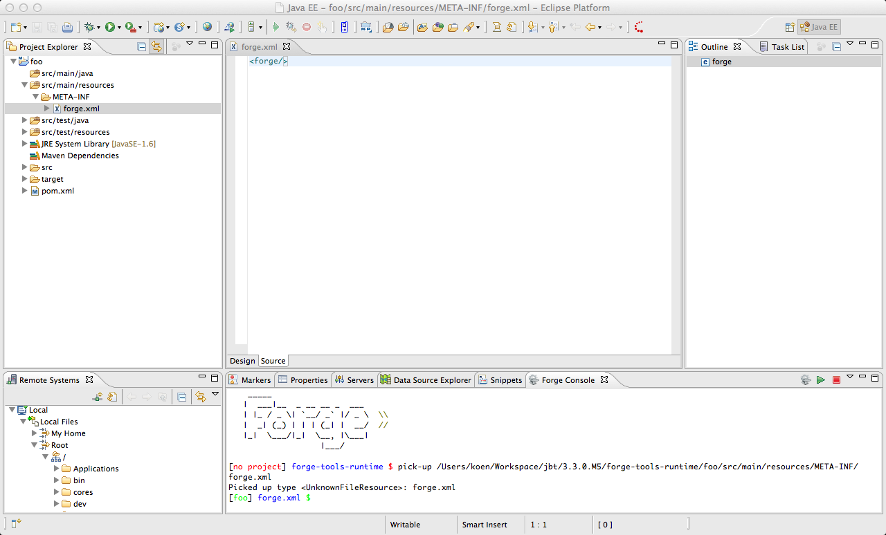
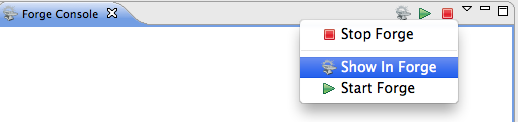

|
| New Embedded Forge Runtime |
The embedded runtime is now a snapshot Forge build from the 7th of December 2011.
|
|
| Support for the 'open' Command |
The 'open' command is now intercepted and the default Forge runtime behaviour is slightly modified. As expected, if the resource is a file Forge opens it in an editor. Before M5, this editor was external to the workbench. This is unwanted behavior and is now changed to open an editor in the workbench. If the resource is a folder in the workspace, this folder is selected and expanded in the Project and/or Package Explorer views. If the resource is a folder outside the workspace it will be selected and expanded in the Remote Systems Explorer view if this view is installed.

|
|
| Support for the 'pick-up' command |
Issuing the 'pick-up' command will now automatically result not only in a change in the Forge runtime context but also in opening the resource. This means that a workbench editor will open if the resource is a file or that the folder will be expanded and selected in the Project and/or Package explorer views if the resource is a folder. Just like with the 'open' command above, the Remote Systems view will be used if the resource is outside of the workspace.

|
|
| 'Show In Forge Console' |
Bringing up the context menu and then selecting the 'Show In' menu on a selected item in the Project or Package explorer will contain an entry labeled 'Forge Console'.

Selecting this entry will result in the Forge Console automatically issuing the 'pick-up' command and changing the current Forge runtime context to the selected resource and performing the other behaviour mentioned earlier.

An alternative for this behavior is to use the toolbar button or the dropdown menu of the Forge Console view.

|
|